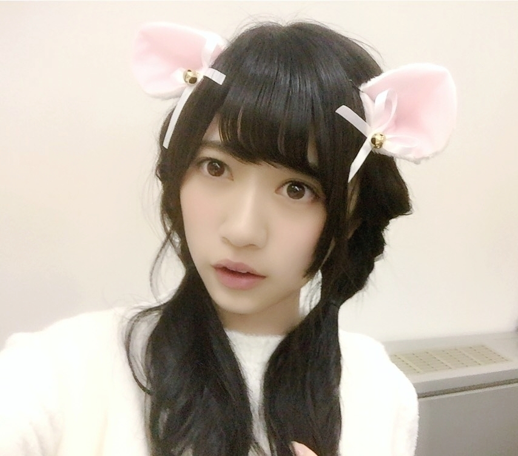
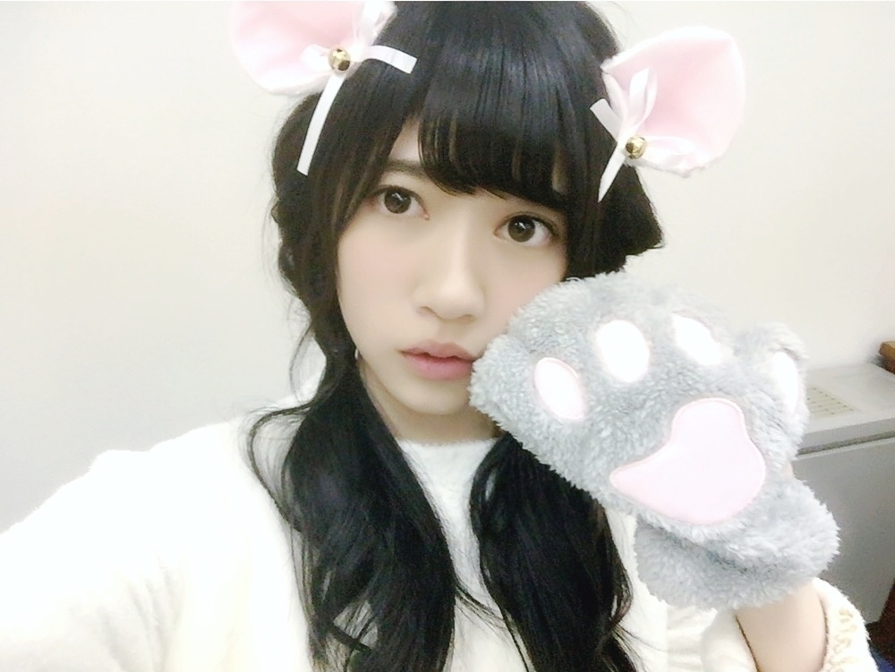
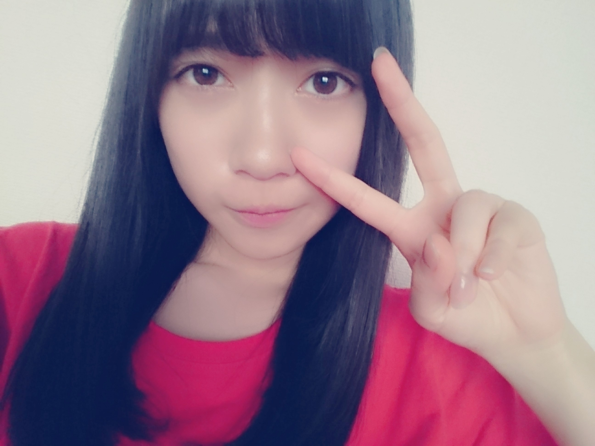
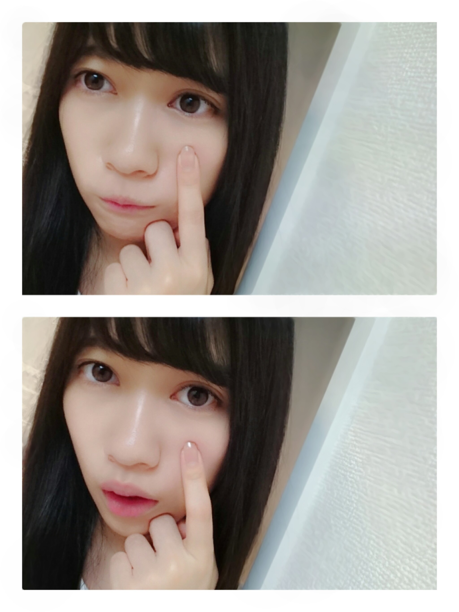

2016/0529Sun豆やで！
おはようございます
こんにちは
こんばんは
本日は個別握手会でした
楽しかったです♪
また、お洋服とかの写メは
後日まとめてアップします
らんぜの勢い
とまらんぜーーーーー
寺田蘭世です
宜しくお願い致します
《質問返し》
●アルバム個握4部から行くよ！
待っててねー♡
蘭世への愛がとまらんぜ！
▶ありがとう♪
アルバムね覚えておくね
アルバム初5部制でドキドキしてるし、
凄く不安だけど
こうやって、コメントで
行くねって報告してくれると
ほっとします(^^)
ありがとね♪
●僕も登山部入りたいです。部長に言っておいてください。
▶乃木中
何で登山部に入部したかと言いますと
人生1度きりだし
こういった機会が無いと
登山なんてしないなーって
思って入部しました
もちろん、生駒さんの
山への思いとか
綺麗な写真に心打たれたのも理由の1つです
できるかなー(^^)笑
●やっぱり同い年のアイドルは推しててすごいたのしい(^-^)/
▶同世代さん(^^)
こちら側としたら
老若男女問わず
そして、人それぞれ
色んな理由で乃木坂46を知ってその中から
寺田蘭世を見つけてくれたことがなにより
嬉しい事です！
どうか、これからも
宜しくお願い致します(^^)
●Hello Terada Ranze.
I'm sorry, I'm sorry, but the picture of this strange onigiri wwwwwww
Terada Ranze is cute ^_^
▶ｱﾘｶﾞﾄｳｺﾞｻﾞｲﾏｽ。
thankyou
If I were able to speak English better I would have been able to speak with you more
:-D
Спасибо за всё.
↑こちらはロシア語
●蘭世〜！
ついにセブンイレブンコラボ始まるね！好きなおにぎりの具は紅鮭です！
▶セブンさんめっちゃお世話になってるから
行くたび乃木坂46って書いてあったりメンバーのグッズだったりが沢山あると
不思議な気持ちになりますが、街なかで
乃木坂46の字を
見るのは凄く嬉しい！
でも、私も乃木坂46として出てみたい
だから、頑張らなきゃね
●全身黒コーデ、自分も好きです。自分はデニム系と全身黒コーデを行ったり来たりしてます！古着屋は掘り出し物が見つかるからすごく良いよね！自分も古着屋見て回るのとかも好きです
▶古着好きな方発見
うれしいたけーです♪
コメントありがとうございます(^^)
●てらだにゃんぜさんが可愛かった。
素で驚いてたのも可愛い(^-^)昔の握手会での猫耳ヘアーを思い出した〜
▶恥ずかしい、、、ニャ

あれ、今世紀最大に恥ずかしかったです
猫耳ね♪
あの髪型あんまりやる機会がないけどお気に入りなんです
凄く懐かしいね
実は今日の握手会若干猫を意識した髪型をしてました
しかも、お洋服も猫柄でした
お洋服の方は意識してなかったのに猫柄を着てたら
皆さんにツッコまれたので2部はネコヘアーにしてました
気づいた方いたのかな？(^^)
また、今日の個別の事は
次あたりに書きます！

●アイドルってもともと興味がなかってたまたま見た動画で蘭世を見たら気になってしかったなかったからコメ描いて応援しようと思ったよ！
▶ありがとうございます
このブログも読んでくれてるかな？
こうやって色んな形で
色んな方と会えるのが
すごく嬉しいです
もし、私が普通の学生さんだったら会うことのない
人達に会えるって
運命だし素敵ですよね(^^)
●坂本ですが？気になってるので見てみるね
オオカミ少女と黒王子も映画やるし見たいな〜
▶みてみてください♪
オオカミ少女と黒王子
映画
私も予定があれば行く気満々です(^^)
その前に時間あったら
もう1回漫画の方も
読み返したいなーって思ってます
《お知らせ》
《雑誌》
24日SamuraiELO
30日月刊エンタメ
6月9日
UTB＋ vol.32
《動画》
6月5日
将棋フォーカス
6月10日
乃木坂46時間TV
《CD》
5月25日
それぞれの椅子
7月27日
15thシングル「タイトル未定」
《コラム》
ニッカンスポーツ・コム
「NEWSがとまらんぜ」
毎週金曜日配信
です(^^)
こうやって告知できるのがすごく嬉しいです
また、感想をモバメやブログ等でちょこちょこ書きますね！
宜しくお願い致します！
それぞれの椅子
とても豪華なアルバムだなーっと思いました
新曲沢山あるし
ライブ映像を特典にするって得した気持ちになる(^^)
ジャケットは
皆で赤と青に別れての撮影でした。
混ぜると紫色になるね
ちなみに
私は大好きな赤色でした
赤赤赤赤赤赤
赤大好き！

赤色の服
前回のアルバム
透明な色を発売した時は
まだ研究生で
もちろん1番後ろので
とても
悔しい思いをしました。
だからあの時
「次もしアルバムを出すとしたらその時はもっと前に
そして上に居てやる」
って目標だったんです。
あのときとは全く違う世界をみれてるけど
私はまだ何も満足していません。
今回もパッと目に止まる位置には居ませんでした。
次こそは
これが私の目標です！
言う事は誰でも出来るけど
実現って難しいです。
頑張っても
世の中叶わぬこともあります。
でも、やってみなきゃ
わからないし
始まらないから
私は、私らしく
昔から変わらない
誰にも真似できない
このスタンスで
これからもやらせて頂きます！
えいえいおー
でも、透明な色からのこの期間はあのときの私からは考えられない程たくさんの景色をみれてるし
色んな事をやってきました
次はどうなってるのかな
楽しみにしておきます
また、明日から
私と一緒に
歩んでくれますか？
いつも、本当にありがとうございます
今日皆さんに直接お会いして
色んな意見を聞けて
アイドルになれて良かったなって改めて思いました。
私をモチベーションに頑張ってるんだって言葉を頂くと
とても嬉しいです
そういう人になりたくて
アイドルになったので
本当に嬉しいです
そして、私自身も
皆さんのその言葉だったり
直接会えたときの笑顔
それが今の私を作ってくれてます
だから、もっと頑張りたいって思えます。
握手最中にいつもこんな事を考えているのですが
文に起こすとどう伝えたらよいものか、、、
でも、本当に感謝してます

季節のかわりめですね
皆さんも体調にはお気をつけてくださいね
おやすみなさい(^^)
2016/05/29 21:12


コメント(794)
センターになるの待ってるよ＼(^o^)／
相変わらず可愛いですね(=^・^=)❤
これからも頑張って(/･ω･)/
可愛いね、らんらん～
Your English is very good.
I hope you keep put English in your blog!
頑張りましょう！
自分は4部にお邪魔しました。
今まで蘭世のブログやモバメは取ってたけど、握手したのは今日が初めてで緊張しました。
これからも応援してます！
一緒に歩ませてください(^^)
今日もおつかれさま
楽しい時間をありがとです(o゜◇゜)ゝ
らんぜ♥
猫かわいい♡
らんぜだいすき♥♥
本日も握手会お疲れ様でした。
体調不良の方も多かったみたいで、色々と多忙かと思いますが、
らんぜも体調を崩さないように気を付けてください。
まだ先にはなりますが、7/10のアルバム個握で
個握としてははじめてらんぜのところへ伺う予定です。
短い時間ですが、その際にはよろしくお願いいします。
これからもいろいろ頑張って！
おうえんしてます！
セブンとコラボイベント、ウエハースだけどこにもないの(´･･`)
ぜったい見つける！笑
*
明日からも一緒に歩みたいです
握手会も行ったことないし推してからまだまだ日も浅いけど、蘭世が好きで憧れてる気持ちはだれよりもあると思う ‼︎
1番見やすいところに来るまで、来てもずっと押し続けます( ¨̮ )
蘭世の勢いとまらんぜ〜〜
一緒に歩むに決まってます！
今までも、そーしてきたんだ！
頭の中は寺田蘭世の一色です…
またコメントするねっ！！
ほいじゃ〜またね〜(σ๑>◡<)σツンツン
今日１～4部行きました♪
ありがとう( ^^)/
楽しかったです！
個人的には靴下が可愛かった♪
ずっと応援しています。
そして有り難うございました。
感想は前のブログに夕方書きました。
(まだ反映前です。イライラ)
あなたが別の道を歩くその時まで
微力ですが
見守らせて頂きます。
約束します。
今日初めてお会いして更に
そう思いました。
アルバムは取りました。
行けるかわからんけど。
行ける時は
行きます、と書くようにします。
ではでは。
(^^)←？！
色々な事がブログに出てきてるね。自分は蘭世が選抜に入ってくれると信じてます。
握手会ありがとうね。猫の耳良かったかな？
体調に気をつけて頑張って
友達に勧められて最近乃木坂大好きになりました！！
俺も今度学校の行事で高尾山登るよー！
久しぶりの登山でワクワク^^
これから暑くなってくるから登山する時は熱中症とか気をつけてね！！
年内に握手会へ行けるように頑張ります。
めっちゃ楽しかったよ！！でも猫耳には気付かなかったな...ごめんね！
あとピンクの派手な靴下も可愛いかったよ！！
今日は色々やってもらってありがとね！またアルバムの個握行くから楽しみに待ってるね！！今日はありがとう！！ゆっくり休んでね！
ありがとう。
今日は握手会お疲れ様でした！！
２部からの参加だったけど楽しかったですd(>_・ )
蘭世も楽しめてたら嬉しいな...
ネコ耳かー
そんな気がしたよ！って今言ってもホントー？ってなりそうだけど...
あぁ、可愛い
って思いが強すぎてなんにも言えなかったです(笑)
最初に事故ってたし...笑
残念ながら来週の握手会はいけないんだよね(><)
でもアルバムの券は取れたからそっちは行きます！！
今からすごい楽しみ♪♪♪
では蘭世も疲れてるだろうから
お身体に気をつけて...
これからも
蘭世の勢い
止まらんぜーーーー
最後の第四部、握手し終わったあとにお帽子と上着が届くなんて…
着ているところを見たかったけど、蘭世ちゃんが新品の帽子を手に取るところは、それはそれで貴重かな？
割りとイベントづくしだった今月はこれでおしまいで、
来月は早速今度の土曜の横浜、全国ツアー静岡2days、月末の幕張でのアルバムの握手会に行きます。46時間TVもあるし、休む暇もない感じかな。
蘭世ちゃんこそ、体調気をつけてね。おやすみなさい。
暑くなってきたから溶けないように頑張って！
いい夢みろよっ！
来週も握手会あるし、手紙の方にこのブログのこと書かせていただきますわ(๑′ᴗ‵๑)
今日ポニーテールしなかったみたいだし、なんか嬉しいです来週会えるの楽しみにしております！
今日もみり愛ヲタ言われ続けましたさすがにつらい(>_<)
ニャンぜかわいい
グッドアフターヌーン
グッドイヴニング
どうもふじっぺです。
握手会ロスです。助けてください。
3rdアルバム、寺田がもっと前で輝いていることを信じてるよ。
いつまでも前進することに貪欲で、前を向き続ける。そんな蘭世が大好きです。
どこまでも一緒に歩いていきます。
(キモイとか言わないでね)
でわ。
頑張れ〜応援してます(^o^)
寺田ニャンぜ最高に可愛かったよ＼(^o^)／
風船のリアクションは人間だったから早く人間になれたね^ ^
また握手会で蘭世ちゃんに会いに行きたいね！
蘭世ちゃんかわいくてたまらんぜ♡
蘭世の勢い止まらんぜ！
熱中症に気をつけて頑張ってね^ ^
おじさんの勢いも止まらんぜ（≧∇≦）
握手会おつかれさまでした！
アルバム個握2部からいけることになったので今からたのしみです:D
アルバム曲いい曲ばかりで発売されてから毎日聞いてます。
「かき氷の片想い」いいですね。
初の2期生だけの曲だし、一人ひとりの声をちゃんと聞くことが出来てすごいうれしいです。
あとは「きっかけ」と「低体温のキス」がかなり好きです。
昨日渋谷のTSUTAYAにいって乃木展みてきました！
壁にジャケットの写真が大きくあってそこで蘭世の顔をはっきりと見ることが出来ました。
次のシングルはもっと前に写っていけるように僕も応援していきますのでよろしくお願いしますm(__)m
蘭世が赤チームにいて僕もうれしくなりました！
僕も赤が大好きです！
個握の写メたのしみにしてます(´∀｀)
では！
今日の握手会行けなくてごめんね(>_<)
アルバムの個別握手会には行くから蘭世といっぱいトークできるの楽しみにしてるね(^^)
明日は今日より約10℃くらい下がるところもあるみたいだから蘭世も体調に気を付けてね！
質問！
握手会の時に同じ服とかキャップとか被ってたほうがやっぱり覚えやすい？
もし覚えやすいならOVERTUREとのコラボキャップ(まいまいたちがデザインしたやつ！)被っていくから！
お疲れ様！！
握手会行って
直接話すとやっぱり
いろいろ感じることや
思う事あります。
握手会好きです笑
握手会あるから
学校とか頑張れるし
頑張れます笑笑
いつもありがとうm(_ _)m
明日からも4日の握手会
をモチベーション
にして死ぬ気で生きます笑
蘭世ちゃん行くとコミュ症
発動するけど、
4日もよろしくどすえ
ではでは
これからも応援してるから頑張ってね!(^^)!
それぞれの椅子買いましたよー
前回の透明な色から着実に前へ進んでいると
思うのです、これからも応援させて下さい！
蘭世の勢いとまらんぜー！！
机なくなった時窓に座ったやつがメッチャ格好よかった、蘭世の印象に残ってるシーンはありますか～？
蘭世への愛がとまらんぜー！
高校の制服コスプレで行ったよ〜！
そんなに回数行ってないのに覚えてるって言ってくれてめちゃくちゃ嬉しかった！
蘭世の気持ち分かってます。気持ちは一緒です。
蘭世の精一杯な姿を見ると俺も頑張らなきゃとなります。
今はパティシエ目指して頑張ってます。正直とても辛くて辞めたいなとも思いました。けど、前に蘭世にパティシエになると言った言葉を嘘にしたくない。小さな頃からの夢を叶えたいという思いで頑張ってます。
7/10のアルバムの個握行きます！
そのあと夏休みに1ヶ月のホテル研修があります。
蘭世に元気をもらってから行こうと思ってます！
今日は本当にありがと！
期間空いちゃうけど、覚えててくれたら嬉しいな笑
ニャンぜめっちゃかわいかった 笑
俺も赤好きだよ〜！
また握手会行きたいよ〜
握手会おつかれ様ねー
ありがとねー
今日も可愛いかったよー
モバメも見たよ！！
ちゃんと今日アップできたね！
恥ずかしかったと思うけど、
NOGIBINGOの企画で猫のやつ超絶可愛かったよ！！
アルバム個握まであっという間に1ヶ月切ったね！！
予定では1部5部以外は行くので楽しみにしています！！(((o(*ﾟ▽ﾟ*)o)))
自分もアルバムのジャッケットお気に入りです♪
次のアルバムではもっと前の方に蘭世が居てくれるとすごく嬉しいので、これからの活動も気合い入れて頑張って下さい！！応援しています＼(^o^)／
んじゃ！
セブンの紅鮭本当に美味しいよね！
セブンは本当にありがたいよね。
アルバムの個握まで1ヶ月きったね！ちょー楽しみです！
にゃんぜほんと可愛い癒し〜〜〜♡♡
恥ずかしがってる蘭世ちゃんが
もー可愛くて仕方なかった(´･_･`)！（笑）
しばらく現場には行けないけど
蘭世ちゃんと一緒に歩んでいきたいなーって
思ってるよ！
わたしも一緒していいかな？(*^^*)
だいすきな蘭世ちゃん！
最近あんまりコメントできてなくて
ごめんね(>_<)
受験で良い結果を出して
早く蘭世ちゃんに会えるように頑張るね！
だいすきだよ〜またコメントする！♪
そして今日の握手会お疲れ様
めっちゃ楽しかったです❗
パシフィコも楽しみ
蘭世〜！忙しいのにブログのコメント返信すごい優しいしそういうとこがまた推せる！
まだ、返してもらえたことないけど地道に毎回送ってるからいつか帰ってくるの楽しみにしてる！
今回のアルバムの個握行けるかわかんないけど私もいつか蘭世に認知してもらえるくらい握手会行くね！！！
大好き！
蘭世への愛が止まらんぜ！
コメントする